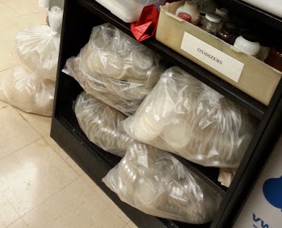

Lab Stewardship
/ˈstü-ərd-ˌSHip/
Definition: the job of supervising or taking care of something, such as an organization or property.
What is lab stewardship?
Lab stewardship is the practice of taking care of the lab and work space. Good lab stewardship ensures that all members of the lab are able to work effectively in the same space to accomplish their objectives on a daily basis. This requires cooperation and respect for one another. Below are a set of good lab stwardship practices that I recommend in order to ensure our space is always able to be used effectively.
On a few rare occasions, poor lab stewardship has been observed in our lab. These cases are documented below as reminders of what not to do.
On Dishes
 Always make sure to clean your dishes after a project. Leaving dirty dishes in the sink prevents other people from being able to use it. Running out of time before classes or conducting large project are not an excuse for not cleaning your dishes. When you are planning an experiment, plan in time to do the dishes too.
Always make sure to clean your dishes after a project. Leaving dirty dishes in the sink prevents other people from being able to use it. Running out of time before classes or conducting large project are not an excuse for not cleaning your dishes. When you are planning an experiment, plan in time to do the dishes too.
On Storage

Storing Petri plates
Label and store your cultures in a way that makes it easy to know who owns them and what they are. It is best to store all of your culture inside ventilated plastic boxes and to use tape on the outside of the box to clearly label the contents and indicate the owner.
Poorly labeled or stored plates are problematic. These stacks can be easily knocked over. It also makes it much more difficult to deter mite contamination of cultures. Keeping your culture plates inside clean plastic boxes helps to slow the spread of mites if a contamination occurs. 
How to store your items
Storing items precariously is also not recommended. Tubes can be easily knocked over, possibly destroying the contents, contaminating storage containers, and creating a mess. Don’t do this!

Storage in the -80C freezer
Always store items inside labeled white boxes, placed into the metal shelving that is inside the freezer. Mark the white box before you put it inside the freezer (markers cannot write on frozen boxes). We have one shelf inside the freezer that is for larger items that cannot fit inside the freezer boxes. All other items that can fit inside a box need to be stored that way and properly labeled (owner, date, contents).
Any USDA-APHIS regulated cultures stored in the -80C must be labeled accordingly and added to the inventory list that is located on the exterior of the freezer door.
On Biohazard Waste
Empty the bin when full

Once a biohazard bag is full, you are responsible for taking care of the trash. If you find the biohazard waste bin is full, remove the bag and contents from the bucket, close the bag, and place the bag onto a tray in preparation to be autoclaved. Place a new liner into the bin. Do not leave the biohazard bins full for the next person to clean up after you. This is an annoyance and also makes a place where spore-bearing cultures can proliferate and serve to contaminate the rest of the cultures in our lab.

Autoclave the waste too
Since our autoclave can fit more than one bag, it may be necessary to stow the tray with closed bag and wait until another bag is full. However, these bags should not accumulate unnecessarily.
Disposing of autoclaved waste
Once bags have been autoclaved and cooled (solidified), the bags can be placed into the regular trash bin that has a black bag liner. There is one large trash container in our lab like this by the main entrance. Only autoclaved biohazard waste can be placed in this container. Once it is full, close the black plastic bag so that the custodial staff know for certain that contents are intended for the dumpster. If this container is full and you have more trash to add, do your custodial staff person a favor and take the trash to the dumpster. This kindness to our staff is the kind of respect they deserve.